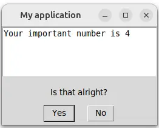

Mininterface – access to GUI, TUI, CLI and config files

Write the program core, do not bother with the input/output.


Check out the code, which is surprisingly short, that displays such a window or its textual fallback.
from dataclasses import dataclass
from mininterface import run
@dataclass
class Env:
""" This calculates something. """
my_flag: bool = False
""" This switches the functionality """
my_number: int = 4
""" This number is very important """
if __name__ == "__main__":
m = run(Env, prog="My application")
m.form()
# Attributes are suggested by the IDE
# along with the hint text 'This number is very important'.
print(m.env.my_number)
Contents
- You got CLI
- You got config file management
- You got dialogues
- Background
- Installation
- Docs
- Gallery
- Hello world
You got CLI
It was all the code you need. No lengthy blocks of code imposed by an external dependency. Besides the GUI/TUI, you receive powerful YAML-configurable CLI parsing.
$ ./program.py --help
usage: My application [-h] [-v] [--my-flag | --no-my-flag] [--my-number INT]
This calculates something.
╭─ options ───────────────────────────────────────────────────────────────╮
│ -h, --help show this help message and exit │
│ -v, --verbose Verbosity level. Can be used twice to increase. │
│ --my-flag, --no-my-flag │
│ This switches the functionality (default: False) │
│ --my-number INT This number is very important (default: 4) │
╰─────────────────────────────────────────────────────────────────────────╯
You got config file management
Loading config file is a piece of cake. Alongside program.py, put program.yaml and put there some of the arguments. They are seamlessly taken as defaults.
You got dialogues
Check out several useful methods to handle user dialogues. Here we bound the interface to a with statement that redirects stdout directly to the window.
with run(Env) as m:
print(f"Your important number is {m.env.my_number}")
boolean = m.is_yes("Is that alright?")


Background
Wrapper between various libraries that provide a user interface.
Writing a small and useful program might be a task that takes fifteen minutes. Adding a CLI to specify the parameters is not so much overhead. But building a simple GUI around it? HOURS! Hours spent on researching GUI libraries, wondering why the Python desktop app ecosystem lags so far behind the web world. All you need is a few input fields validated through a clickable window... You do not deserve to add hundred of lines of the code just to define some editable fields. Mininterface is here to help.
The config variables needed by your program are kept in cozy dataclasses. Write less! The syntax of tyro does not require any overhead (as its argparse alternatives do). You just annotate a class attribute, append a simple docstring and get a fully functional application:
- Call it as
program.py --helpto display full help. - Use any flag in CLI:
program.py --my-flagcausesenv.my_flagbe set toTrue. - The main benefit: Launch it without parameters as
program.pyto get a full working window with all the flags ready to be edited. - Running on a remote machine? Automatic regression to the text interface.
- Or access your program via web browser.
Installation
Install with a single command from PyPi.
Bundles
There are various bundles. We mark the bundles with GPL3 dependencies.
| bundle | size | licence | description |
|---|---|---|---|
| mininterface | 30 MB | LGPL | standard (GUI, TUI) |
| mininterface | 36 MB | LGPL | standard (GUI, TUI) |
| mininterface[web] | 36 MB | including WebInterface | |
| mininterface[img] | images | ||
| mininterface[tui] | images | ||
| mininterface[gui] | GPL | images, combobox, calendar | |
| mininterface[ui] | 100 MB | GPL | full installation |
| mininterface[all] | 100 MB | GPL | full installation, same as ui, reserved for future use (big dependencies, optional interfaces) |
Minimal installation
Should you need just the CLI part and you are happy with basic text dialogs, use these commands instead:
pip install --no-dependencies mininterface
pip install tyro typing_extensions pyyaml simple_term_menu
MacOS GUI
If the GUI does not work on MacOS, you might need to launch: brew install python-tk
Docs
See the docs overview at https://cz-nic.github.io/mininterface/.
Gallery
These projects have the code base reduced thanks to the mininterface:
- deduplidog – Find duplicates in a scattered directory structure
- touch-timestamp – A powerful dialog to change the files' timestamp
Hello world
Take a look at the following example.
1. We define any Env class.
2. Then, we initialize mininterface with run(Env) – the missing fields will be prompter for
3. Then, we use various dialog methods, like is_yes, choice or form.
Below, you find the screenshots how the program looks in various environments (graphic interface, web interface...).
from dataclasses import dataclass
from pathlib import Path
from mininterface import run
@dataclass
class Env:
my_file: Path # This is my help text
my_flag: bool = False
my_number: int = 4
if __name__ == "__main__":
# Here, the user will be prompted
# for missing parameters (`my_file`) automatically
with run(Env) as m:
# You can lean on the typing
# Ex. directly read from the file object:
print("The file contents:", m.env.my_file.read_text())
# You can use various dialog methods,
# like `is_yes` for bool
if m.is_yes("Do you want to continue?"):
# or `choice` for choosing a value
fruit = m.choice(("apple", "banana", "sirup"), "Choose a fruit")
if fruit == "apple":
# or `form` for an arbitrary values
m.form({
"How many": 0,
"Choose another file": m.env.my_file
})
Launch with ./program.py:


Or at the remote machine MININTERFACE_INTERFACE=tui ./program.py:


Or via the plain text MININTERFACE_INTERFACE=text ./program.py:

Or via web browser MININTERFACE_INTERFACE=web ./program.py:

You can always set Env via CLI or a config file:
$ MININTERFACE_INTERFACE=gui ./program.py --help
usage: program.py [-h] [OPTIONS]
╭─ options ──────────────────────────────────────────────────────────────╮
│ -h, --help show this help message and exit │
│ -v, --verbose Verbosity level. Can be used twice to increase. │
│ --my-file PATH This is my help text (required) │
│ --my-flag, --no-my-flag │
│ (default: False) │
│ --my-number INT (default: 4) │
╰────────────────────────────────────────────────────────────────────────╯